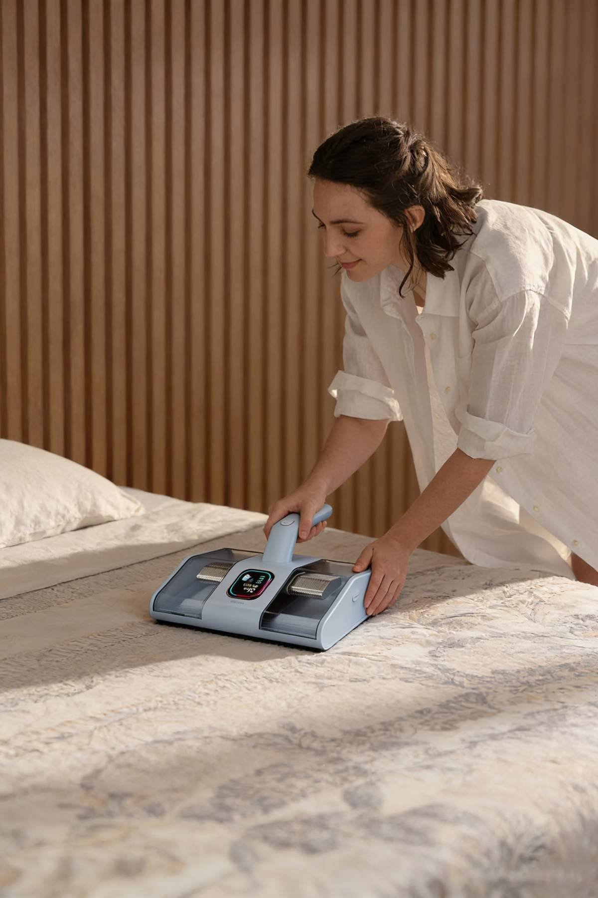
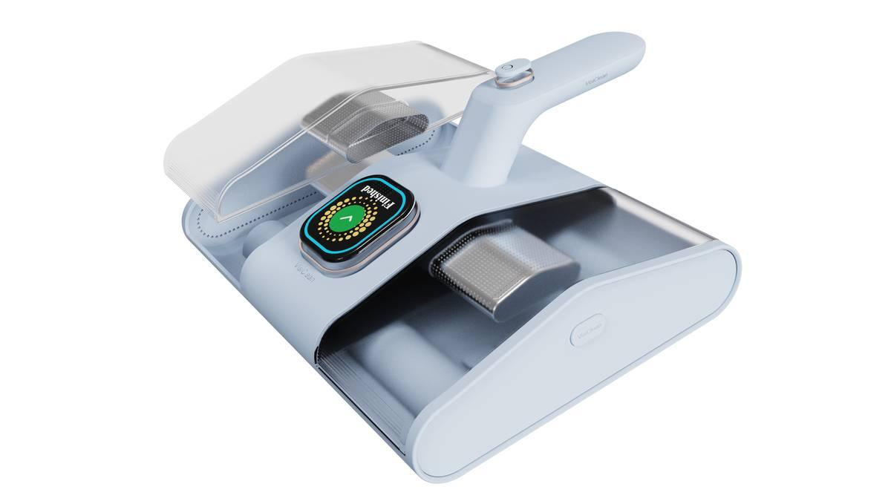
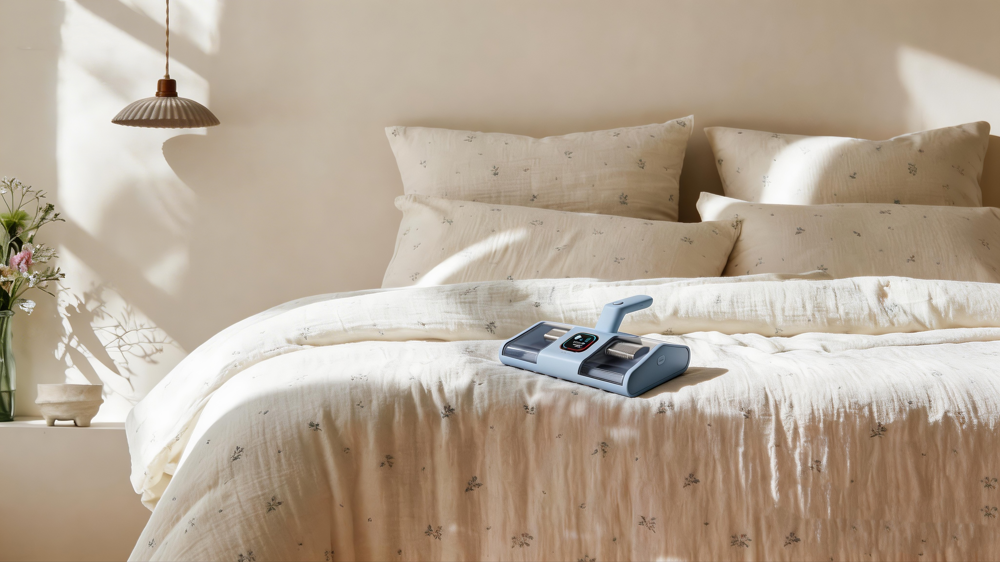
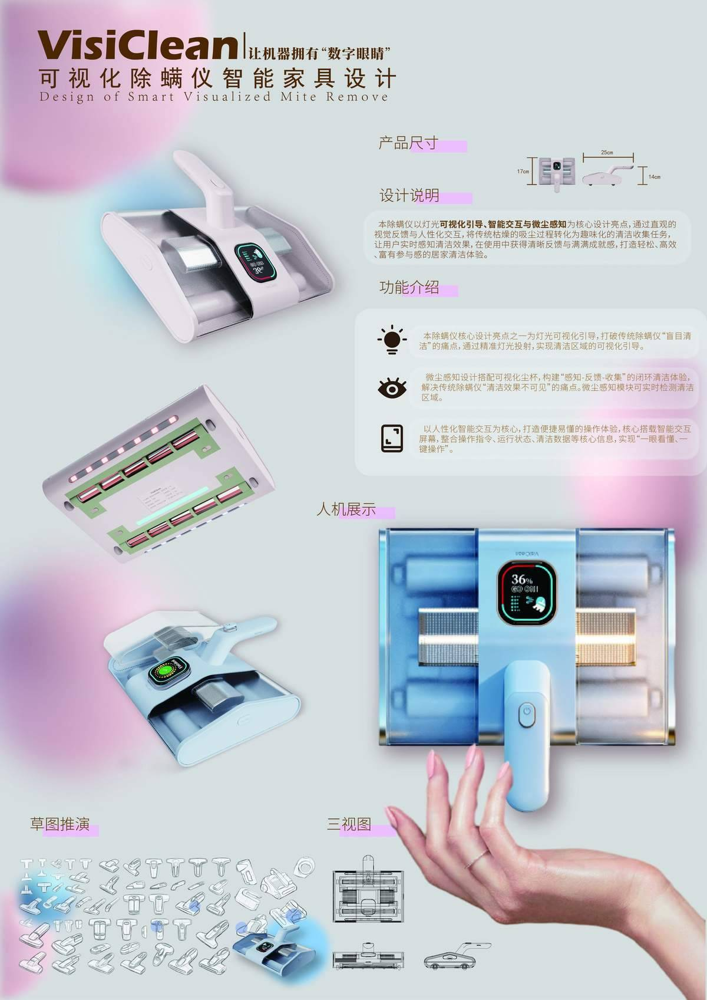

VisiClean可视化除螨仪智能家电
"让机器拥有数字眼睛"——以灯光可视化引导、智能交互与微尘感知为核心，将传统枯燥的除螨过程转化为趣味化的清洁体验，让用户实时感知清洁效果，在使用中获得清晰反馈与满满成就感。

项目概述
VisiClean 是一款面向现代家居生活的智能化可视化除螨仪，核心理念是通过"灯光可视化引导 + 智能交互 + 微尘感知"解决传统除螨仪"盲区清洁、缺乏反馈、操作繁琐"的痛点。机身采用流线型人体工学设计，提供天空蓝与樱花粉两种配色，搭载中央 OLED 显示屏与可变色 LED 灯带，实现清洁过程的实时可视化。
产品强调"人机共创"——用户不仅是使用者，更是清洁过程的监督者与参与者。通过可视化尘杯、微尘传感反馈与配套 APP（VisiClean Connect），将不可见的除螨过程转化为直观的感官体验，并引入游戏化机制与成就系统，打造轻松、高效、富有参与感的居家清洁体验。
目标用户为 25-40 岁都市女性，注重生活品质与健康。调研显示：68% 的用户因宝宝过敏问题产生购买动机，71% 的用户期望通过产品提升居家幸福感。VisiClean 正是为这群"精致生活、自在享受"的用户而设计。
核心功能
• UV-C 紫外线杀菌灯，深度杀灭螨虫及细菌
• 微尘传感器 + OLED 屏幕，实时反馈空气质量与清洁进度
• 多层 HEPA 滤网 + 静电集尘板，过滤效率达 99.97%
• 前置 / 后置 LED 照明灯，确保床褥缝隙无死角
• 配套 VisiClean Connect APP，支持远程监控与数据可视化
使用工具
设计过程
用户调研与竞品分析
对 200+ 目标用户进行深度访谈与问卷调研，总结出三大核心痛点：清洁效果不可见、操作复杂难上手、重复劳动无成就感。竞品对比分析显示，VisiClean 在可视化尘杯、实时粉尘反馈与光照引导系统方面具有显著差异化优势。
概念草图与形态推演
历经 12 轮手绘草图迭代，探索不同手柄弧度、屏幕位置与灯光布局方案。关键转折点为确定"中央圆形 OLED 屏 + 两侧 LED 灯带"的最优组合，平衡了信息呈现与握持手感。通过硅胶人手模型模拟握持测试，将手柄末端加重平衡前端吸头重量。
硬件与交互原型
使用 Arduino 搭建微尘传感与灯光反馈原型，验证 PM2.5/PM10 检测精度与 LED 灯带颜色映射逻辑。同步设计 VisiClean Connect APP 界面，包括实时仪表盘、清洁热力图、游戏化挑战赛与成就勋章系统，实现软硬件协同体验闭环。
样机制作与用户测试
完成高保真样机制作，在 3 个城市开展为期一个月的用户体验测试，满意度达 92%。用户反馈"第一次觉得打扫这么有成就感"、"孩子过敏症状明显缓解"。根据测试数据优化续航、防水等级与 APP 交互流程。



项目成果
设计认可
荣获第十届"米兰设计周-中国高校设计学科师生优秀作品展"非命题赛场省部级级三等奖、"华夏奖"文化艺术设计大赛铜奖、2026年国际大学生数字艺术设计竞赛新锐奖。
设计洞察
基于50+用户深度访谈，提炼"效果不可见、操作无反馈、机身笨重"三大痛点，确立灯光引导、微尘感知、轻量化三大设计机会点。
CMF与工程创新
抗指纹哑光喷涂机身搭配软胶包覆把手，电机后置平衡重心，推行阻力降低30%；集成式主控模块简化内部走线，提升量产装配效率。